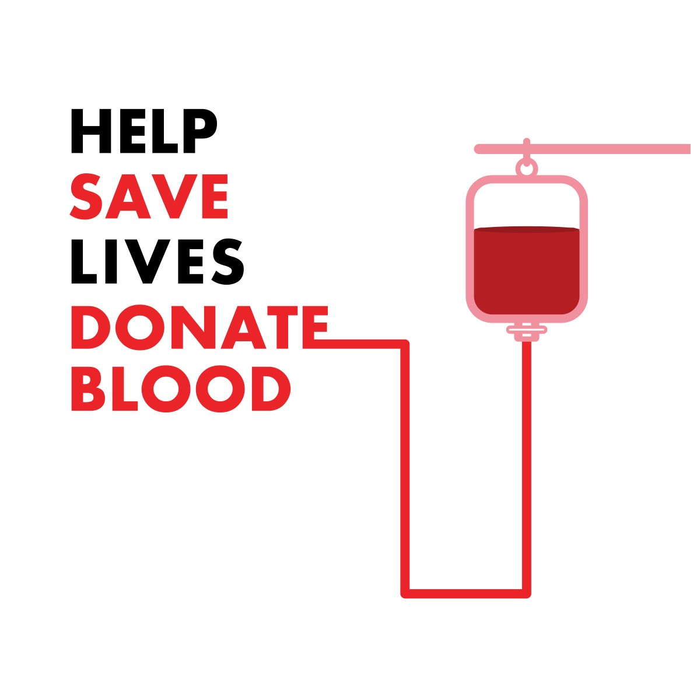

Find Donor
A donor is someone who gives a part of their body or some of their blood to be used by doctors to help a person who is ill.“It can be difficult to find someone willing to donate a , but it isn't that difficult to find someone who cares for the patient
Click Here
Blood Donation Facts
Blood Donation Prerequisites is a thing that is required as a prior condition for something else to happen or exist.A donor is someone who gives a part of their body or some of their blood to be used by doctors to help a person who is ill Click HereBlood Donation Chart
Blood types are very important when a blood transfusion is necessary. In a blood transfusion, a patient must receive a blood type compatible with his or her own blood type.Click Here
Donate Blood
A blood donation occurs when a person voluntarily has blood drawn and used for transfusions and/or made into biopharmaceutical medications by a process called fractionation (separation of whole blood components). Donate Blood

There is Always a Blood Donation Chart in our Website where we can refer that chart for a Successful Blood Donation.
We can always know about the Blood Facts , Blood Donation uses and Why we need to Donate Blood.

LTI BB


It improves your health.